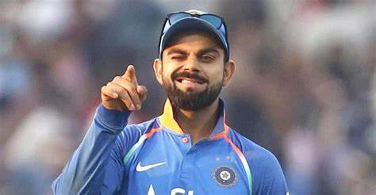
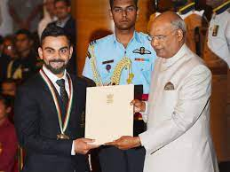

G.O.A.T
|
Brief Bio
 vk-1
|
AboutVirat Kohli is an Indian international cricketer and former captain of the India national cricket team. He plays for Delhi in domestic cricket and Royal Challengers Bangalore in the Indian Premier League as a right-handed batsman.Kohli made his Test debut in 2011. He reached the number one spot in the ICC rankings for ODI batsmen for the first time in 2013. He has won Man of the Tournament twice at the ICC World Twenty20 (in 2014 and 2016). He also holds the world record of being the fastest to score 24,000 international career runs.He also is the leading run scorer of all time in T20s, as well as the current leading run scorer in T20 World Cups. Kohli has been the recipient of many awards– most notably the Sir Garfield Sobers Trophy (ICC Men's Cricketer of the Decade): 2011–2020; Sir Garfield Sobers Trophy (ICC Cricketer of the Year) in 2017 and 2018; ICC Test Player of the Year (2018); ICC ODI Player of the Year (2012, 2017, 2018) and Wisden Leading Cricketer in the World (2016, 2017 and 2018). At the national level, he was awarded the Arjuna Award in 2013, the Padma Shri under the sports category in 2017 and the Rajiv Gandhi Khel Ratna award, the highest sporting honour in India, in 2018. In 2016, he was ranked as one of the world's most famous athletes by ESPN and one of the most valuable athlete brands by Forbes.In 2018, Time magazine named him one of the 100 most influential people in the world. In 2020, he was ranked 66th in Forbes list of the top 100 highest-paid athletes in the world for the year 2020 with estimated earnings of over $26 million. |
Awards And Honours
 vk-2
|
Early lifeVirat Kohli was born on 5 November 1988 in New Delhi into a Punjabi Hindu family.His father, Prem Kohli, worked as a criminal lawyer and his mother, Saroj Kohli, is a homemaker.He has an older brother, Vikash, and an older sister, Bhavna. Kohli was raised in Uttam Nagar[19] and started his schooling at Vishal Bharti Public School.[16][20] In 1998, the West Delhi Cricket Academy was created and a nine-year-old Kohli was part of its first intake.[19] Kohli trained at the academy under Rajkumar Sharma and also played matches at the Sumeet Dogra Academy at Vasundhara Enclave at the same time. In ninth grade, he shifted to Saviour Convent in Paschim Vihar to help his cricket practice. His family lived in Meera Bagh until 2015 when they moved to Gurgaon. Kohli's father died on 18 December 2006 due to a stroke after being bed-ridden for a month. |
||
International careerEarly years In August 2008, Kohli was included in the Indian ODI squad for tour of Sri Lanka and the Champions Trophy in Pakistan. Prior to the Sri Lankan tour, Kohli had played only eight List A matches.So, his selection was called a "surprise call-up". During the Sri Lankan tour, as both first-choice openers Sachin Tendulkar and Virender Sehwag were injured, Kohli batted as a makeshift opener throughout the series. He made his international debut, at the age of 19, in the first ODI of the tour and was dismissed for 12. He made his first ODI half century, a score of 54, in the fourth match. After the postponement of the Champions Trophy to 2009, Kohli was picked as a replacement for the injured Shikhar Dhawan in the India A squad for the unofficial Tests against Australia A in September 2008. Kohli, after recovering from a minor shoulder injury, returned to the national team replacing the injured Gautam Gambhir in the Indian squad for the tri-series in Sri Lanka. He batted at number 4 for India in the 2009 ICC Champions Trophy because of an injury to Yuvraj Singh. He found a place in the home ODI series against Sri Lanka in December 2009 and scored 27 and in the first two ODIs before making way for Yuvraj who regained fitness for the third ODI. However, Yuvraj's finger injury recurred leading to him being ruled out indefinitely. Kohli returned to the team in the fourth ODI at Kolkata and scored his first ODI century–107 off 114 balls–sharing a 224-run partnership for the third wicket with Gambhir. India won by seven wickets to seal the series 3–1. Tendulkar was rested for the tri-nation ODI tournament in Bangladesh in January 2010,which enabled Kohli to play in each of India's five matches.During this series He became only the third Indian batsman to score two ODI centuries before their 22nd birthday. Kohli was much praised for his performances during the seriesas the leading run scorer of the series with 275 runs from five innings at an average of 91.66. |